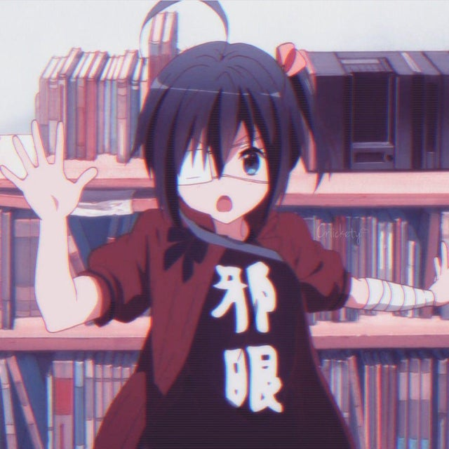

Rikka
Voiced by: Maaya Uchida (Japanese); Margaret McDonald[2] (English)
Rikka is Yūta's classmate and neighbor residing above Yūta's apartment. She is an intensely delusional girl who believes herself to possess a "Wicked Eye" (邪王真眼, Jaō Shingan, lit. Tyrant's Eye of Truth), and as such always wears a medical patch over her right eye and wrapped bandages around her left arm, though she has no injuries to either. Despite being quite attached to Yūta, she is cautious of strangers and adopts a battle pose whenever she meets someone for the first time. Her fantasy weapon of choice is a frilly parasol which she wields as a sword. For her delusional operations, she often dresses in a mostly-black gothic dress. At school, she wears a uniform with a frilly skirt, long black knee socks, and shoes that sometimes function as roller shoes. She is also rather clumsy, often tripping over and forgetting things.LN 1 The origin of her delusions come from her father's death three years prior, where she was forced to live with her father's family until she moved in with her sister.Ep. 7-8[volume & issue needed]. They also come from Yūta himself, when she saw Yūta in his delusional phase at the balcony above Yūta's apartment.[volume & issue needed][clarification needed] They eventually become close and develop feelings for one another and start dating, but Rikka's delusions appear to keep their relationship from progressing.[volume & issue needed] A running gag in the series is that she visits Yūta by climbing down a balcony with a rope.LN 1

Yūta Togashi is a boy who, during junior high school, suffered from "chūnibyō", believing that he possessed supernatural powers and calling himself the "Dark Flame Master", therefore alienating himself from his classmates. Finding his past embarrassing, Yūta attempts to start off high school where he does not know anyone, free from his old delusions. This proves to be difficult, however, as a delusional girl in his class, Rikka Takanashi, learns of Yūta's past and becomes interested in him.
As the plot progresses, Rikka becomes more attached to Yūta, who, despite finding her delusions irritating and embarrassing, accepts her. He helps Rikka with a number of things, including founding and maintaining her club and tutoring her. The club in question, the "Far-East Magical Napping Society - Summer Thereof" also includes current chūnibyō Sanae Dekomori; former chūnibyō Shinka Nibutani; and the constantly sleeping Kumin Tsuyuri. When Yūta joins Rikka on her summer vacation, Yūta learns that two years prior, Rikka's father, to whom she was very close, died unexpectedly due to a terminal illness, causing her to fall into her delusions. After Yūta agrees to help Rikka search for the "Ethereal Horizon" (不可視境界線, Fukashi Kyōkaisen), which she believes will lead her to her father, she becomes romantically interested in him and vice versa.

Click Rikka